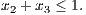

|
| (1) |
When x2 = 1, we have the valid constraint
|
| (2) |
Lift the inequality to give a valid inequality for S. (Hint: consider a change of variables z2 := 1 - x2. Make sure you convert your constraint back to the x variables.)
Solution:
With the given change of variables, (1) is equivalent to the constraint
or equivalently
|
| (3) |
This is now in our framework for lifting: we have a valid constraint (2) in x1, x3, x4 when z2 = 0. To find the lifting coefficient, we solve:
achieved by multiple solutions including x1 = 0, x3 = 1, x4 = 0, z2 = 0. Hence the lifting coefficient is 2 - ζ = 1, so the lifted constraint is
Expressing this in terms of the original variables, we have the valid constraint
or equivalently
where a,c ∈ ℤ+n. Assume aj ≤ b for j = 1,…,n. Let S denote the set of feasible solutions.
- Prove that the convex hull of S has dimension n.
- Give a condition on the entries of a that guarantees that the inequality ∑ j∈Nixj ≤ 1 defines a facet of the convex hull of S. Prove it is a facet when your condition is satisfied.
Solution:
- Feasible solutions to the knapsack problem include the empty set and the n sets consisting of just one item. Hence the convex hull of S is full-dimensional.
- There are |Ni| packings that satisfy the constraint at equality, namely the packings consisting of exactly
one item from Ni. Let
so ak = i, k ∈ Ni.
Assume aj ≤ b -i for every j ⁄∈ Ni. Then each j ⁄∈ Ni is in the valid solution {j,k}.
The incidence vectors of the given n packings are linearly independent, so they are affinely independent, so the given constraint defines a facet provided the assumption holds.
|
| (4) |
is a valid inequality. Let {j(i)} = C ∩ Ni when C ∩ Ni≠∅. Prove the following inequality is also valid:
Solution:
Because of the constraint that at most one item can be picked from each subset, we must have
with equality only if exactly one item j with aj ≥ aj(i) is chosen from each set Ni.
If exactly one such item is picked from each set Ni with |C ∩ Ni| = 1 then
since C is a cover. Hence it is not possible to pick exactly one item from each set Ni with the item j from set Ni satisfying aj ≥ aj(i), so the constraint in the question is valid.
Solution:
- Solution to LP relaxation is x = (1,1,0.6,0). This leads to the minimal cover {2,3} and the minimal
cover inequality
 Lifting on x1 and then x4 gives the facet defining inequality

Lifting in the other order gives the same inequality.
- Solution to LP relaxation is x = (0,,0,1). This leads to the minimal cover {2,4} and the minimal cover
inequality
Lifting on x1 and then x3 gives the facet defining inequality
Lifting in the other order gives the same inequality.
- Solution to LP relaxation is x = (1,0.4,1,0). This leads to the minimal cover {1,2,3} and the minimal
cover inequality
Lifting on x1 and then x4 gives the facet defining inequality

Lifting in the other order gives the same inequality.
Solution:
There exist multipliers λ1,…,λm, not all zero, with
It follows that
Hence, ∑ i=1mλi = 0 so the vectors are affinely dependent.